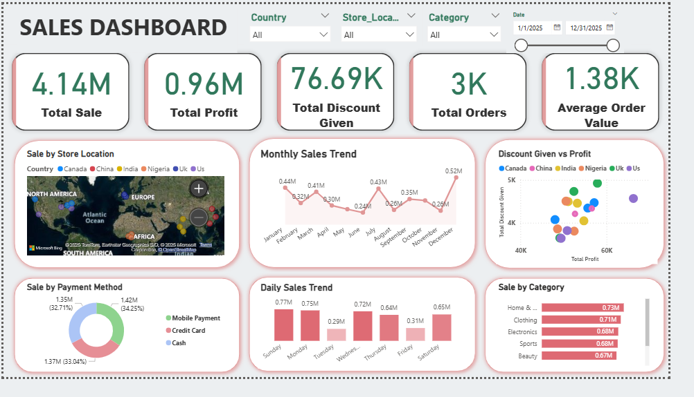

Featured Projects

CodeX Energy Drink Market Analysis
Marketing analytics project using Power BI to transform survey data into actionable business insights and strategic recommendations for CodeX Energy Drink.
Tools: Power BI
View Project
Lio-Jotstar OTT Platform Analysis
Power BI dashboard analyzing subscriber growth, content consumption, inactivity trends, and subscription behavior for the proposed Lio-Jotstar OTT platform merger.
Tools: Power BI
View Project
SQL Sales Analysis
Performed sales, profit, product, and store performance analysis using SQL queries and business intelligence techniques.
Tools: MySQL | Power BI
View Project
Food Delivery Analysis
This project analysis food delivery data to uncover insights about customer behaviour, restaurant performance, and promotion effectiveness using Python data analysis libraries.
Tools: Python, Power BI
View Project